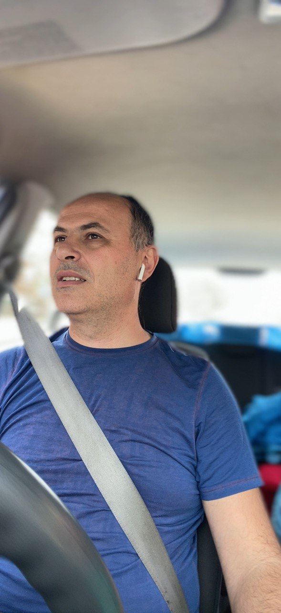

About me

Hi, my name is Aleks and I am eleven years old. I love basketball and my favourite school subject is physical education. My school starts at 9 AM and ends at 1:50 PM everyday. They always give us alot of homework but I am used to it. I would love it if the school was more focused on basketball.
My family
My mum
This is my mum. She is always by my side no matter what.
My dad
This is my dad. He is often away from home because of his job but he is still really special to me.
Botevgrad
This is our town Botevgrad. It is kind of small but we love it. It is so small, that every time I go outside I see someone that I know. I suggest you visit Botevgrad because there is a museum and a clock tower.